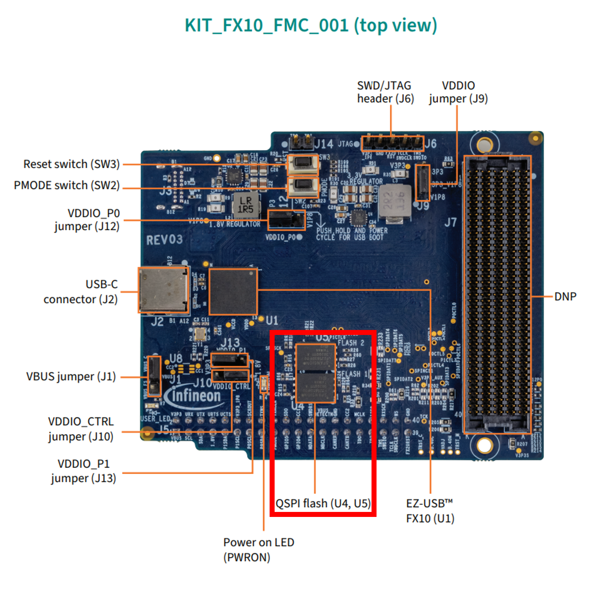
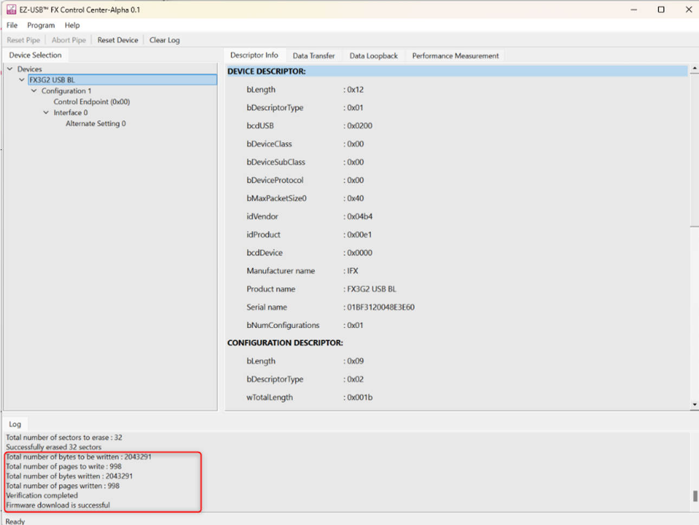
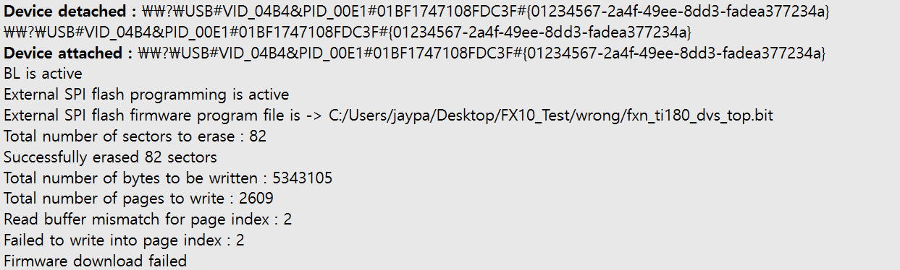
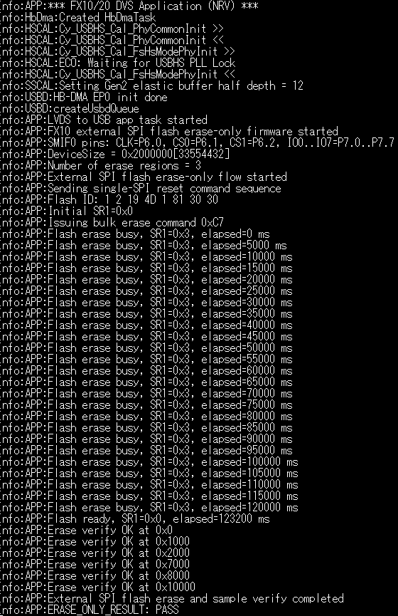

FX10 외부 SPI 플래시 쓰기 실패: page index 2 오류의 원인과 해결
Efinity에서 만든 bitstream을 FX10 카메라 모듈의 외부 SPI 플래시에 기록하면 지우기는 성공하지만 세 번째 page에서 검증이 실패했습니다. 이 글은 host와 센서 레지스터부터 확인한 뒤, 오류 주소를 계산해 외부 플래시의 섹터 구조 문제로 범위를 좁히고 해결한 과정을 정리합니다.
page index 2의 시작 주소는 0x1000입니다.
이 경계와 플래시 앞부분의 4 KiB parameter sector 구조가 맞물렸고,
chip erase 후 지워진 값을 확인한 다음 다시 기록하여 해결했습니다.
page index 2에서 readback mismatch
0xFF 검증 후 원래 기록 절차 재실행
1. 문제 상황
카메라 모듈에 bitstream을 기록하려고 하면 장치 연결, bootloader 진입, 외부 SPI flash programming 시작까지는 정상적으로 진행됐습니다. 도구에는 82개 sector를 성공적으로 지웠다고 표시됐지만, 실제 write 단계에서는 세 번째 page를 읽어 비교하는 순간 실패했습니다.
처음에는 FX10 host 설정부터 카메라 센서 레지스터까지 확인했습니다. 이 점검으로 장치가 전혀 통신하지 못하는 문제는 아니라는 것을 확인했습니다. 이후 로그를 다시 보면 실패 지점은 센서 설정이 아니라 외부 SPI 플래시에 데이터를 쓰고 다시 읽어 비교하는 단계였습니다. 그래서 조사 대상을 외부 플래시의 쓰기·지우기 경로로 좁혔습니다.



Read buffer mismatch for page index : 2가
발생했습니다. 이 줄이 실패 주소를 계산하는 출발점입니다.
2. 오류 로그에서 확인한 내용
Total number of sectors to erase : 82
Successfully erased 82 sectors
Total number of bytes to be written : 5343105
Total number of pages to write : 2609
Read buffer mismatch for page index : 2
Failed to write into page index : 2
Firmware download failed기록 page 한 개는 2,048 byte였습니다. page index는 0부터 시작하므로 index 2의 첫 주소는 다음과 같이 계산됩니다.
0x1000
즉, 실패는 임의의 위치가 아니라 플래시 시작점에서 정확히 4 KiB 떨어진 주소에서 발생했습니다. 이 규칙적인 경계는 전송 파일이나 센서 레지스터보다 플래시의 erase 단위와 sector map을 먼저 확인해야 한다는 근거가 됐습니다.
3. 원인을 좁힌 과정
| 확인 항목 | 확인 목적 | 판단 |
|---|---|---|
| bootloader와 장치 연결 | FX10이 프로그래밍 모드로 진입하는지 확인 | 정상 |
| host·센서 레지스터 | 카메라 제어 경로 전체가 끊긴 문제인지 확인 | 주요 원인 제외 |
| 외부 flash ID | SPI 통신과 flash 응답 여부 확인 | 응답 정상 |
| 실패 주소 계산 | 오류가 특정 경계에서 반복되는지 확인 | 0x1000 |
| chip erase 후 표본 읽기 | 지우기와 실제 flash 데이터 상태 확인 | 0xFF, PASS |
외부 SPI NOR의 섹터 구조와 기존 erase 계산 방식이 맞지 않았습니다.
플래시 앞부분에는 4 KiB parameter sector가 배치되는 hybrid sector 구조가
사용됐지만, 기존 프로그래밍 흐름은 기록 영역을 64 KiB sector 기준으로
계산하고 지운 것으로 판단됩니다. 따라서 화면의
Successfully erased 82 sectors는 erase 명령 흐름이 완료됐다는
뜻일 뿐, 기록할 모든 주소가 실제로 0xFF가 됐다는 보장은
아니었습니다.
NOR 플래시는 erase 후 bit가 1, 즉 0xFF 상태가 됩니다.
program 동작은 1을 0으로 바꿀 수 있지만, 이미 0인 bit를 다시 1로
만들 수는 없습니다. 지워지지 않은 0이 남아 있으면 새 데이터를 쓴 뒤
읽은 값이 원본 buffer와 달라져 readback mismatch가 발생합니다.
여기서 바꿔야 했던 “메모리 공간”은 FX10 내부 RAM이나 FPGA RTL 주소 공간이 아닙니다. 정확히는 외부 SPI NOR 플래시의 sector/erase map을 기존 도구가 처리하는 방식이 문제였습니다. Efinity의 일반 SPI 옵션이나 센서 레지스터를 바꾸는 것으로 해결할 수 있는 문제가 아니었습니다.
4. 해결 방법
기존 sector erase 결과를 그대로 믿지 않고, 먼저 외부 플래시 전체를 chip erase한 다음 실제 데이터가 지워졌는지 확인했습니다.
- erase-only helper firmware를 올립니다. FX10이 외부 플래시 지우기와 읽기 검증만 수행하도록 합니다.
- flash ID를 읽습니다. SPI 배선과 명령 경로가 정상인지 먼저 확인합니다.
- chip erase 명령
0xC7을 실행합니다. - busy가 해제될 때까지 기다립니다. 이번 기록에서는 약 123.2초가 걸렸습니다.
- 여러 경계 주소를 읽습니다.
0x0,0x1000,0x2000,0x7000,0x8000,0x10000이0xFF인지 확인합니다. - 원래 bootloader/programming firmware로 되돌립니다.
- FX Control Center에서 bitstream을 다시 기록합니다.
장기적으로는 프로그래머가 실제 hybrid sector map을 읽고 각 구간에 맞는 erase 명령을 사용하도록 고치는 편이 안전합니다. 플래시를 uniform sector 구성으로 바꾸는 방법도 검토할 수 있지만, 정확한 부품 번호와 configuration register, OTP 및 복구 가능성을 확인하기 전에는 적용하면 안 됩니다.
5. 해결 검증

0x1000을 포함한 표본 주소에서
erase 상태를 확인했고, helper가 ERASE_ONLY_RESULT: PASS를 출력했습니다.
| 확인 항목 | 수정 전 | 수정 후 |
|---|---|---|
| 외부 flash ID | 응답함 | 응답함 |
0x1000 erase 검증 |
불완전한 상태로 판단 | 0xFF 확인 |
| page index 2 write/readback | mismatch | 정상 |
| bitstream 기록 | Firmware download failed | 정상 완료 |
6. 정리와 재발 방지
- erase 성공 메시지와 실제 byte가
0xFF인지 확인하는 작업을 구분합니다. - 실패 page를 byte 주소로 계산해 4 KiB, 64 KiB 같은 경계와 일치하는지 봅니다.
- flash ID가 읽혀도 sector map과 erase 명령이 올바르다는 뜻은 아닙니다.
- host나 센서 설정을 바꾸기 전에 로그가 어느 하드웨어 단계에서 멈췄는지 먼저 구분합니다.
- chip erase를 사용할 때는 전체 데이터 삭제 위험을 먼저 확인합니다.
참고 자료
아래 자료는 이번 로그에서 확인된 hybrid sector와 NOR erase 동작을 이해하기 위한 기술 참고 자료입니다. 현재 보드에 장착된 정확한 flash 부품 번호를 이 글에서 확정한 것은 아닙니다.
NRV 장비 개발 과정에서 직접 확인하고 해결한 내용을 개인 기술 노트로 정리했습니다. 제품별 firmware와 flash 구성은 달라질 수 있으므로 실제 장비의 부품 번호와 설정을 함께 확인해야 합니다.